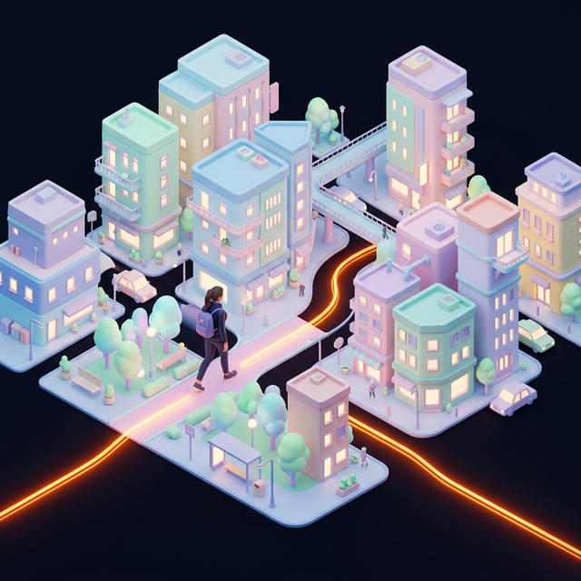
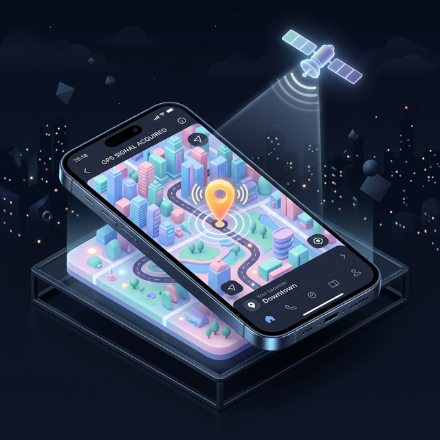

Colora la tua città
Esplora il mondo reale. Ogni strada su cui cammini diventa la tua tela arancione.
Diventa Street Boss
Cammina di più degli altri su una specifica strada per conquistarla e scalare la classifica.

GPS Necessario
Per giocare e tracciare le tue conquiste, abilita i servizi di localizzazione ad alta precisione quando richiesto.